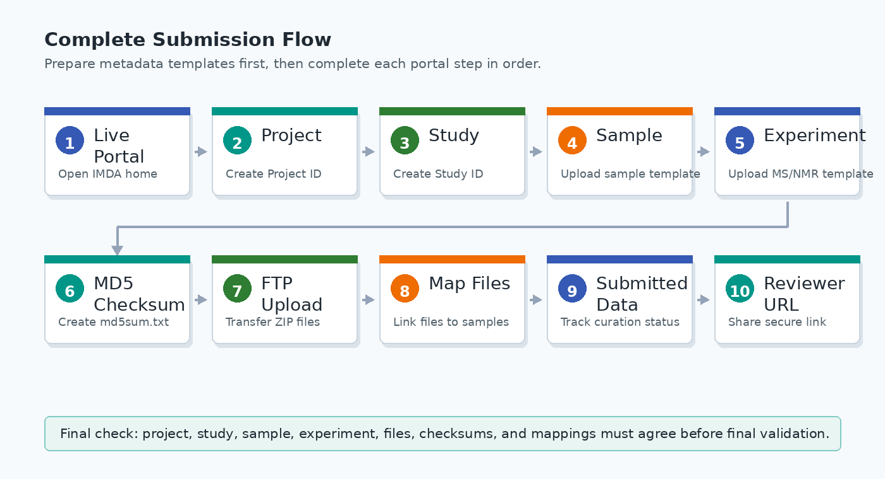

Before You Start
Complete these checks before beginning a new IMDA submission.
Testing Portal
Use the IMDA testing database for validation: https://ibdc.dbt.gov.in/imda_test/.
Complete Submission Flow
Follow the IMDA workflow in this order so that every later form can use the identifiers created in the earlier steps.
| Step | IMDA Menu | What Happens | Output Needed for Next Step |
|---|---|---|---|
| 1 | Login / Register | Create and activate the user account, then log in. | Active IMDA user account. |
| 2 | Register Project | Enter the project title, contributors, research area, funding source, and description. | Project ID. |
| 3 | Register Study | Link the study to the project and enter study details, authors, data type, summary, keywords, release date, and publication/approval details. | Study ID. |
| 4 | Register Sample | Link samples to the study, select source and organism, check taxonomy ID, and upload the sample template. | IMDA sample IDs. |
| 5 | Register Experiment | Upload the metabolite/compound file and the MS or NMR analytical template. | Experiment metadata linked to sample IDs. |
| 6 | Zip and MD5 Checksum | Zip raw data folders where required and generate checksums for the final files. | Final file names and MD5 checksum values. |
| 7 | FTP Files Upload | Upload zipped raw/derived data files to the correct project and study folder. | Uploaded files visible on the server. |
| 8 | Map Uploaded Files | Link each uploaded file to the correct study, sample, assay/protocol, and MD5 checksum. | Files validated for the study. |
| 9 | Submitted Data | Check submission status and respond to any curator-requested corrections. | Submitted or curated study record. |
| 10 | Reviewer Access URL | Activate and copy the private reviewer link when needed. | Shareable reviewer URL. |

Data and File Preparation
- Prepare raw and derived data files.
- Compress complex raw data folders into individual ZIP archives before transfer.
- Use only letters, numbers, hyphens, underscores, and dots in file names.
- Do not use spaces or special characters in file names.
- Organize raw data into clear local folders before compression.
- Install an FTP client such as FileZilla.
- Use open formats where possible. IMDA prefers mzML for MS data and nmrML for NMR data.
Metadata Preparation
- Collect name, email, and affiliation details for the Principal Investigator and all contributing authors.
- Prepare the study summary, keywords, DOI where applicable, and ethical or institutional approval numbers.
- Keep project, study, sample, assay, protocol, and file names consistent across all forms/templates.
Before Moving Ahead
Do not start uploading files until project, study, sample, and experiment metadata are complete. File mapping depends on the IDs created during those steps.